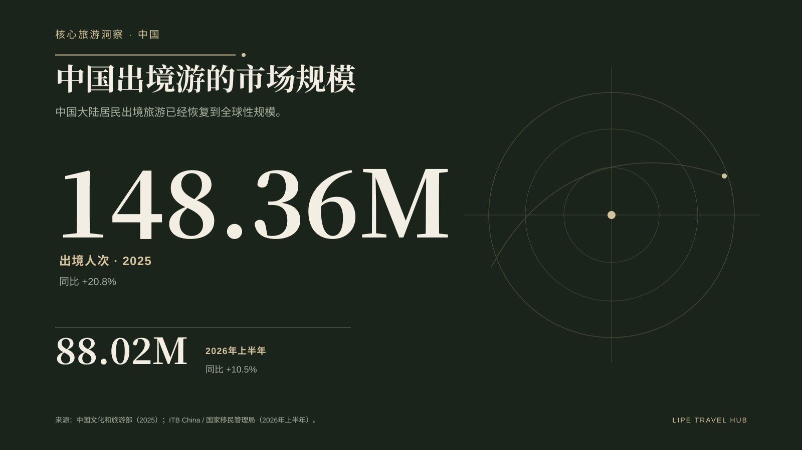
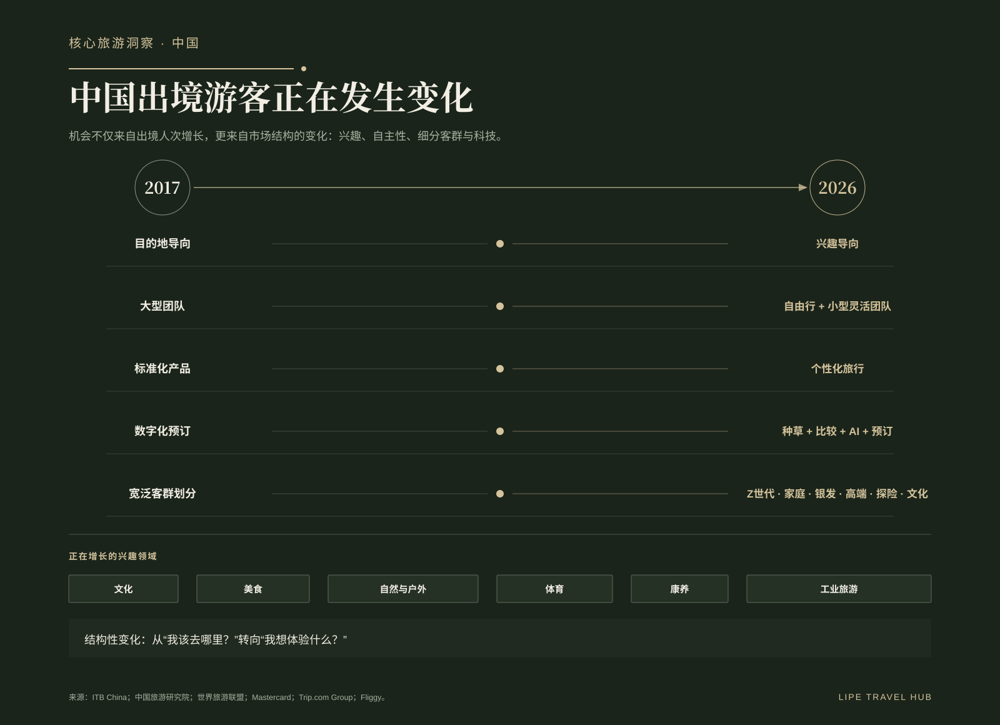
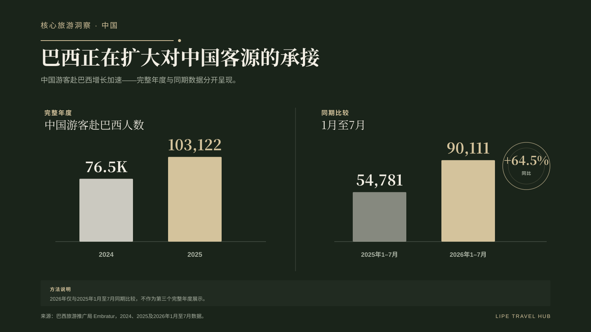
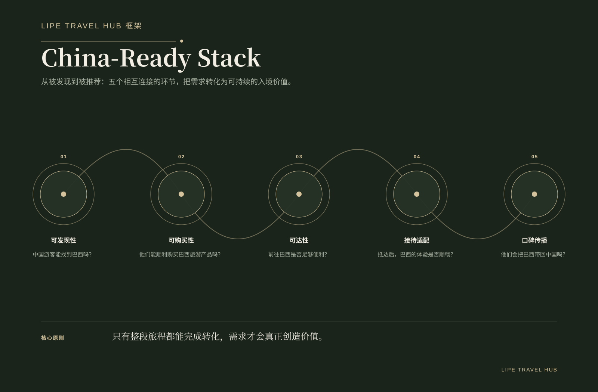
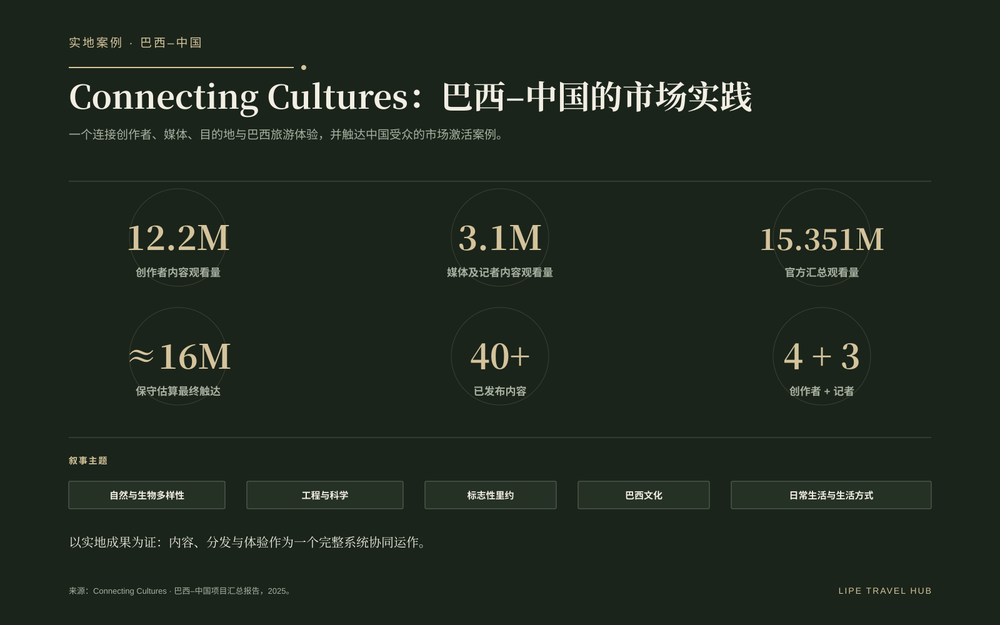

规模回来了，竞争也回来了。
中国出境游已经重新回到大规模增长轨道。2025 年出境旅行达到 1.4836 亿人次，同比增长 20.8%；2026 年上半年达到 8802 万人次，同比增长 10.5%。对于全球目的地而言，问题已经不再是“中国游客是否回来”，而是谁能更有效地承接这一轮需求。
巴西也在提速。2024 年接待中国游客约 7.65 万人，2025 年突破 10.3 万；2026 年 1—7 月达到 90,111 人次，而 2025 年同期为 54,781 人次，同比增长 64.5%。需要特别说明：这里的“中国出境旅行人次”和“巴西入境游客人数”属于不同统计口径，不能直接计算所谓市场份额。它们的作用，是帮助我们理解市场规模与竞争距离。

进入全球竞争区间，只是第一步。
截至 2024 年，中国游客的足迹已经覆盖 210 多个国家和地区。接待中国游客超过 100 万人次的目的地接近 20 个，超过 10 万人次的目的地则超过 60 个。巴西在 2025 年跨过 10 万人次门槛，意义不小，但也说明它刚刚进入一个更成熟、更拥挤的竞争层级。
2026 年入境便利度的改善有帮助，但降低入境摩擦并不等于降低购买摩擦。能否被发现、被比较、被预订、顺利抵达、获得匹配的接待体验并愿意推荐，才决定兴趣能否真正转化。
真正变化更大的，不只是规模，而是旅行者结构。
如果只把 2017 到 2025 看作“恢复与增长”，会忽略更深层的变化。旅行决策正在从 destination-led 转向 interest-led；大团模式之外，独立旅行与更小、更灵活的团组不断增加；标准化产品让位于更个性化的行程；数字旅程也从单纯预订，演变为灵感、比较、AI 辅助与交易的融合。
细分市场变得更加具体：Gen Z、家庭、银发、premium、冒险与文化客群需要不同的产品逻辑。兴趣版图也在扩大——文化、美食、自然与户外、体育、wellness、工业旅游，都可能成为真实的出行动机。

巴西有资源，但资源必须被组织成“可购买的产品”。
拥有一个景点，并不等于拥有一个国际化旅游产品。要进入购买链路，一个资源需要被清晰理解、有价格与库存、可分销、与交通衔接，并且具备稳定的接待能力。
伊泰普就是一个典型案例。巴西能够销售的并不只有自然景观和经典地标；工程、科学、能源与工业旅游，同样可以对应 interest-led 客群。关键是把这些资产组织成可发现、可比较、可预订的体验。


新的竞争前线，是数字发现与数字分销。
小红书、微信、微博、中国 OTA 与旅游平台、内容创作者、结构化产品信息，以及 AI 辅助规划，正在压缩“看到—感兴趣—比较—预订”之间的距离。旅游产品不仅需要被游客看懂，也越来越需要被替游客组织行程的系统看懂。
因此，本地化内容、结构化数据、清晰库存、合适的分销渠道和平台存在感，不再只是“面向中国的营销动作”，而是进入中国市场所需要的商业基础设施。

The China-Ready Stack
Lipe Travel Hub 将这套能力归纳为五个相互连接的层级：Discoverability、Bookability、Accessibility、Receivability 与 Advocacy。任何一层脱节都会产生损耗：能被看到却不能预订，会造成摩擦；完成销售却没有准备好接待体验，会伤害口碑；服务做得好却没有形成传播与推荐，则会损失旅程结束后的长期价值。
因此，China-ready 并不等于“翻译成中文”。它意味着把需求、分销、抵达、运营与推荐设计成一个连贯的市场系统。

Field Case：Connecting Cultures
2025 年实施的 Connecting Cultures 项目，为“不同巴西叙事如何激活不同兴趣”提供了现场证据。4 位内容创作者与 3 位记者走访圣保罗、伊瓜苏和里约热内卢，内容覆盖自然与生物多样性、工程与科学、经典里约、巴西文化，以及城市日常与生活方式。
项目汇总结果包括：创作者内容 1220 万次观看，媒体与记者内容 310 万次观看，官方汇总 1535.1 万次观看；考虑后续增长与转发后，保守估算最终触达约 1600 万，并发布 40 多篇/条内容。真正有价值的并不是单一的曝光数字，而是它证明：面向中国市场，并不存在唯一一种“巴西故事”。



连接性仍然是最重要的结构性摩擦。
巴西无法在便利度上与亚洲短途目的地竞争，因此更需要依靠独特性、体验密度和感知价值来建立出行理由。连接性也就不只是航空议题，而是产品战略的一部分。
巴中之间的政府、推广与市场合作基础能够降低一部分障碍，但商业结果最终仍取决于目的地和企业是否能把这些条件转化为真正可购买、可运营的产品。
巴西—中国机会：现在最重要的七个动作。
- 不要只翻译，要真正本地化。
- 让巴西旅游产品真正可预订。
- 围绕兴趣设计，而不只围绕目的地设计。
- 打造 China-ready 的完整客人旅程。
- 把连接性当作产品战略。
- 让游客成为内容与传播节点。
- 衡量转化，而不只是可见度。
巴西不需要“赢下”1.48 亿次出境旅行。它需要做的是，提高自己承接其中一小部分、但持续增长且价值较高客流的能力。机会已经开始移动。下一阶段不应只谈潜力，而应看真实的市场承接与转化。
资料与方法
资料与方法：ITB China；中华人民共和国文化和旅游部；国家移民管理局；中国旅游研究院；世界旅游联盟；Mastercard；Trip.com Group / Ctrip；飞猪；Embratur；巴西旅游部 / Gov.br；巴西外交部（Itamaraty）；已在编辑工作中验证的官方航空资料；Connecting Cultures 项目汇总报告。中国出境旅行人次与巴西入境游客人数属于不同统计口径，本文仅用来理解市场规模与竞争距离，不用于直接计算市场份额。